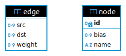

1. Basic eval function#
The “Query Languages for Neural Networks” paper describes how we can implement an eval term in FO(SUM), which returns the output of a model for a given input. Our goal is to translate this term into a SQL query. In this chapter, we start from the simplest case, gradually building up in complexity in later chapters.
1.1. Creating the model#
To get started, we first need a neural network. We always assume a ReLU-FNN, a fully connected feed-forward neural network with ReLU activation layers .
We create a simple network with the following properties:
1 input neuron
1 output neuron
2 hidden layers with 2 neurons each
import torch
import numpy as np
import matplotlib.pyplot as plt
import utils.sqlite as db
import utils.nn as nn
import pandas as pd
# Add a manual seed for reproducibility.
torch.manual_seed(223)
# Define a simple function to train the network on.
def f(x):
if x < 0:
return 0
elif 0 <= x < 5:
return x
elif 5 <= x < 10:
return 10-x
else:
return 0
# The function only does interesting stuff between x=0 and x=10, so limit the
# training data to that area.
x_train = np.linspace(-5, 15, 1000)
y_train = np.array([f(x) for x in x_train])
model = nn.ReLUFNN(input_size=1, hidden_size=2, num_hidden_layers=2, output_size=1)
nn.train(model, x_train, y_train, save_path="models/basic_eval.pt")
Since we will be creating a lot of ReLU-FFNs, we move this to a separate module called
utils.nn. The code can be found here.
With our model trained and ready, let’s compare it to the original function.
model.eval()
predicted = model(torch.tensor(x_train, dtype=torch.float32).unsqueeze(1)).detach().numpy()
plt.plot(x_train, y_train, 'b', label='Original function')
plt.plot(x_train, predicted, 'r', label='Neural Network approximation')
plt.legend()
plt.show()
We can see that the neural network nicely approximates the original function.
1.2. Creating the database#
A neural network can be seen as a directed graph, where each node has a bias value and each edge a weight value. We store this graph representation in SQLite, a relational database. The schema looks as follows:

The node’s name property holds the name of the node as defined in PyTorch and
is purely informational.
The following code creates this schema and imports the model.
db.load_pytorch_model_into_db(model)
Similar to the model creation, this code is included from a separate module
utils.sqlitethat can be found here.
To give an idea what the inserted data looks like, we’ll fetch all nodes and edges.
display(pd.read_sql_query("SELECT name, bias FROM node", db.con))
display(pd.read_sql_query("SELECT * FROM edge", db.con))
| name | bias | |
|---|---|---|
| 0 | input.0 | 0.000000 |
| 1 | linear_relu_stack.0.bias.0 | 0.581110 |
| 2 | linear_relu_stack.0.bias.1 | -2.342160 |
| 3 | linear_relu_stack.2.bias.0 | -0.393416 |
| 4 | linear_relu_stack.2.bias.1 | -0.183346 |
| 5 | linear_relu_stack.4.bias.0 | -0.000223 |
| src | dst | weight | |
|---|---|---|---|
| 0 | 1 | 2 | 0.768845 |
| 1 | 1 | 3 | 0.468451 |
| 2 | 2 | 4 | 0.622264 |
| 3 | 2 | 5 | 0.360834 |
| 4 | 3 | 4 | -2.024734 |
| 5 | 3 | 5 | -1.199183 |
| 6 | 4 | 6 | 1.238098 |
| 7 | 5 | 6 | 1.470374 |
To reassure us that these weights and biases are correct, we can use
model.state_dict() to compare them to the tensors of the PyTorch model.
model.state_dict()
OrderedDict([('linear_relu_stack.0.weight',
tensor([[0.7688],
[0.4685]])),
('linear_relu_stack.0.bias', tensor([ 0.5811, -2.3422])),
('linear_relu_stack.2.weight',
tensor([[ 0.6223, -2.0247],
[ 0.3608, -1.1992]])),
('linear_relu_stack.2.bias', tensor([-0.3934, -0.1833])),
('linear_relu_stack.4.weight', tensor([[1.2381, 1.4704]])),
('linear_relu_stack.4.bias', tensor([-0.0002]))])
1.3. Creating the eval query#
The paper constructs the \(eval\) term as follows:
Let \(val_1, \ldots, val_m\) be additional weight constant symbols representing input values.
Then the following term \(t_1(u)\) describes the value of any neuron \(u\) in the first hidden layer:
\( t_1(u) := ReLU(b(u) + w(in_1, u) \cdot val_1 + \ldots + w(in_m, u) \cdot val_m) \)
With \(w(a, b)\) being the weight value of the edge that connects node \(a\) to node \(b\), and \(b(a)\) the bias of node \(a\).
We can now inductively define the weight term \(t_l\) for any subsequent layer \(l > 1\):
\( t_l(u) := ReLU(b(u) + \Sigma_{x:E(x,u)} w(x,u) \cdot t_{l-1}(x)) \)
The value of the \(j\)-th output neuron is given as follows:
\( eval_j := ReLU(b(out_j) + \Sigma_{x:E(x,out_j)} w(x,out_j) \cdot t_{l}(x)) \)
Where \(l\) is the number of the last hidden layer.
We translate this term into a SQL query. Keep in mind that the paper assumes the number of layers \(l\) is known. We will explicitly refrain from using SQL’s recursive capabilities in this stage and instead build the query manually. We’ll switch to recursion in a later chapter.
The full query is given here:
WITH input_values AS (
SELECT $val1 AS input_value
),
input_nodes AS (
SELECT id, bias
FROM node
WHERE id NOT IN
(
SELECT dst FROM edge
)
),
t1 AS (
SELECT
MAX(
0,
n.bias + SUM(e.weight * v.input_value)
) AS t1,
e.dst AS id
FROM edge e
JOIN input_nodes i ON i.id = e.src
JOIN node n ON e.dst = n.id
CROSS JOIN input_values v
GROUP BY e.dst, n.bias
),
t2 AS (
SELECT
MAX(
0,
n.bias + SUM(e.weight * t1.t1)
) AS t2,
e.dst AS id
FROM edge e
JOIN t1 ON t1.id = e.src
JOIN node n ON e.dst = n.id
GROUP BY e.dst, n.bias
),
outputs AS (
SELECT
n.bias + SUM(e.weight * t2.t2) AS output_value,
e.dst AS output_node_id
FROM edge e
JOIN t2 ON t2.id = e.src
JOIN node n ON e.dst = n.id
GROUP BY e.dst, n.bias
)
SELECT * FROM outputs;
We rely heavily on Common Table Expressions (CTEs) to improve readability. Let’s break the query down step-by-step.
WITH input_values AS (
SELECT $val1 AS input_value
)
The neural network accepts only one input value. $val1 is a placeholder that
will receive the input value when executing the query.
input_nodes AS (
SELECT id
FROM node
WHERE id NOT IN
(
SELECT dst FROM edge
)
)
The set of input nodes is defined as the nodes that do not have any incoming edge.
t1 AS (
SELECT
MAX(
0,
n.bias + SUM(e.weight * v.input_value)
) AS t1,
e.dst AS id
FROM edge e
JOIN input_nodes i ON i.id = e.src
JOIN node n ON e.dst = n.id
CROSS JOIN input_values v
GROUP BY e.dst, n.bias
)
This is the term \(t_1(u)\) that represents the values of the first layer’s hidden neurons.
FROM edge e JOIN input_nodes i ON i.id = e.srcselects all edges that start from an input node, which means thate.dstis the ID of the hidden neuron in the first layer.We only have one input value, so
CROSS JOIN input_values vsimply adds them to the output relation.GROUP BY e.dst, n.biascombined withSUMrepresents the summation over all the input weights for each hidden neuron.MAX(0, x)represents the ReLU activation function.
The result is a relation that has a row for each hidden neuron in the first layer.
t2 AS (
SELECT
MAX(
0,
n.bias + SUM(e.weight * t1.t1)
) AS t2,
e.dst AS id
FROM edge e
JOIN t1 ON t1.id = e.src
JOIN node n ON e.dst = n.id
GROUP BY e.dst, n.bias
)
This CTE is very similar to \(t_1\). It is the inductive case where we calculate the values of the second hidden layer by relying on the ones we calculated for the first hidden layer.
outputs AS (
SELECT
n.bias + SUM(e.weight * t2.t2) AS output_value,
e.dst AS output_node_id
FROM edge e
JOIN t2 ON t2.id = e.src
JOIN node n ON e.dst = n.id
GROUP BY e.dst, n.bias
)
SELECT * FROM outputs;
As the final step we have another similar CTE. The main difference here is that we omit the ReLU application. The result is the final value for each output node.
1.4. Running the query#
Let’s now run the query on the database to see of the result is identical to that of the model’s evaluation. The query is available in the file eval_generic_basic.sql.
with open('queries/eval_generic_basic.sql', 'r') as query_file:
query = query_file.read()
nn_output = model(torch.tensor([5], dtype=torch.float32).unsqueeze(1)).detach().numpy()
sql_output = db.con.execute(query, {'val1': 5}).fetchone()
print(f"The neural network predicted {nn_output[0][0]}")
print(f"The SQL query calculated {sql_output[0]}")
The neural network predicted 4.999991416931152
The SQL query calculated 0.9993730256714065
As we can see, the output is nearly identical. There is some difference, which can be explained by different floating point precisions.
We can plot the neural network’s output and the sql query’s output for all of our training data to see if they correspond nicely.
y_sql = []
for x in x_train:
(y,_) = db.con.execute(query, {'val1': x}).fetchone()
y_sql.append(y)
plt.plot(x_train, predicted, 'r', label='Neural Network output')
plt.plot(x_train, y_sql, 'b', label='SQL query eval output')
plt.legend()
plt.show()
1.6. Conclusion#
We have shown that we can use SQL to evaluate a basic FNN. In the following chapters, we’ll gradually increase the complexity of the neural network and adapt our query accordingly.